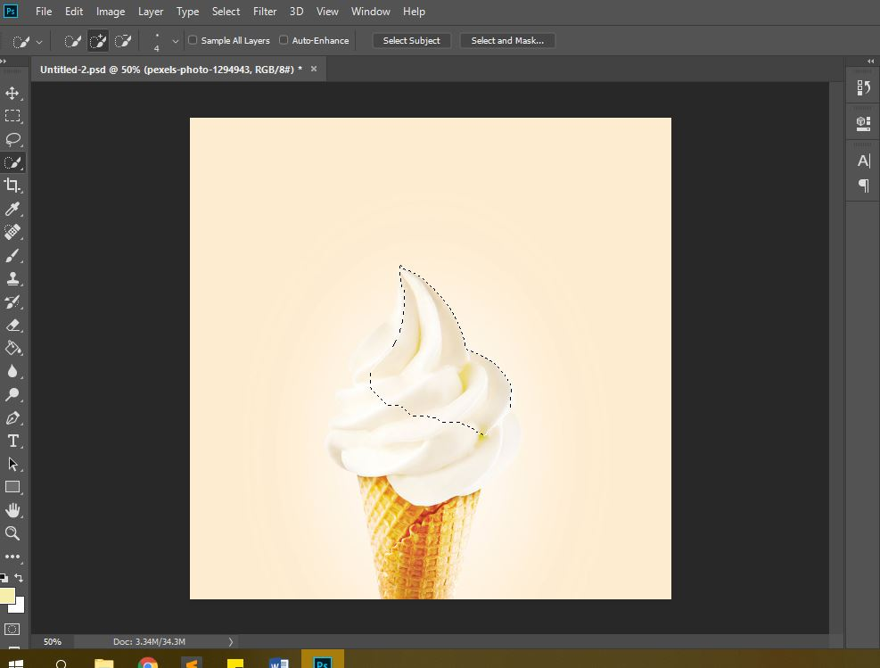
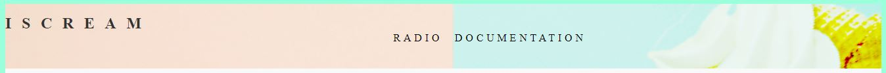
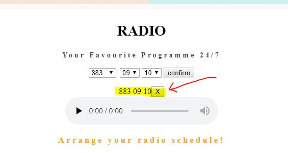

As a passionate radio-listener, the radio is a form of traditional media that I enjoy listening to. However, with modernisation and advancements in technology, many argue that the radio is facing its downfall with the number of listeners declining sharply. This saddens me which prompted me to embark on this project.
Firstly, I did a simple survey via Instastory to find out whether people still listened to the radio and their reasons for doing so or for not doing so. There were responses such as “Too much talking” and “No because they don’t play songs I’m into”. To me, these responses depict situations that are temporary and can be avoided. Naturally, the first solution that one can think of to the aforementioned problems is to switch channels. That was when I conceptualised this project which has a player that naturally helps users to switch to their preferred radio stations at different times of the day.
My project is a website titled Iscream because Iscream has the word “Scream” which relates to voice and radio, and because Iscream sounds like my favourite food – icecream. The website would have a page titled “Radio” and the page will have a web radio filter that allows users to switch between radio channels automatically at specific times of the day of their choice. For instance, assume Jane likes to listen to radio station 1003 because of the Chinese songs played but she does not like the story telling session from 9am to 10am. Using my web radio filter, Jane can set the player to another radio station such as 933 at 9am. At the same time, she can set the player to switch back to 1003 at 10am. After confirming these preferences, the player will automatically play the radio programmes of the specified radio station at the specific timings.
An example of my web radio player function can be seen in following short video. Intially, at 1.34am (seen at the top left corner), I was listening to Chinese radio station 933. While listening, I set the player to switch to 987 at 1.35am. When it was 1.35am, the player automatically changed to 987 seamlessly.
To make this website, I mainly used Hyper Text Marked-up Language (HTML), Cascading Style Sheets(CSS) and Javascript. As a business student with limited coding knowledge, the coding that I used were not sophisticated. I mainly relied on the types of coding we learnt in class as well as referred to w3schools.com for assistance. Although I used rather basic codes, I am proud that I have successfully achieved my aim of creating a web radio filter
Referring to Code Academy which we were taught to use in week 5 tutorial, crafting the HTML code required me to bear in mind certain rules such as including opening tags. While coding the HTML, I also stuck to the fix HTML structure consisting of a “head” and a “body”. Usually what is part of “head” cannot be seen unlike the “body” section of the HTML. I thus mainly used the “head” section to link my HTML file to my CSS file and my Javascript file.
In the HTML, I mainly created various element ids that could be used in the Javascript file. I also created a dropdown list for the radio stations via < select > . To obtain the sources for the various radio stations, I inspected the online stream sites to obtain the sources of the radio stations which were often either in mp4 or AAC, two of the more popular audio file types.
My CSS file was used to set the design of the site in terms of font, size, and also background image. The CCS file was also used to set the position of the texts on the website. For instance, for the navigation bar, I wanted the words “Radio” and “Documentation” to be in the middle of the page. To do so, I included a line “padding-left” and similar to how we learnt to code the paddler in Pong, “padding-left” is where the item starts from. This means that if I wanted the words to be in the middle, instead of setting it at exactly “50vw”, it had to position at less than "50vw". Hence, I set padding-left to be 42.5vw.
Before imputing the background image via codes into the CSS file, I used Adobe Photoshop to create a background photo. To do this, I applied the lesson learnt from one of our classmates during the tutorial workshop session. The classmate taught us how to use the Quick Selection tool to cut out objects which was what I did as seen in the following picture. Quick selection tool selects the objects by the contrasting colours and something that I learnt was that it would have been easier if I had used an image where there was a larger contrast between the colour of the object and the background. In my case, the colours of the vanilla cream and the background were similar so it was difficult to use the quick selection tool.
Moving on, the Javascipt file was mainly used to create the radio player. I used if function to allow the player to automatically switch to the station of the user’s choice. Assume that a user sets the player to radio station A at time B. If the current station playing was not A and if the current time matched time B, the player will load station A and play it. To enable the player to play the audio automatically, I used “.play()”. Similar to what we learnt when creating the Pong game, I made use of addEventListener functions to trigger specific actions when users take a specific action. For instance, when user click “confirm” after choosing a radio station to be played at a specific timing, thus user’s request will be displayed directly below the dropdown lists and above the player. Such immediate feedback enhances user experience as users can immediately see the results of their actions. These requests can be deleted by the “X” button next to the selection
Analysing my radio web filter with Janet Murray’s 4 affordances, it is moderately encyclopedic as there were many options in the dropdown list for the radio stations. There is also no limit to the number of preferences users can add to the player. They can set a long list of preferences for the entire day and as long as the user does not close the browser, these preferences will be saved and abided by. While moderately encyclopedic, meaning high storage volume for information a limitation was that currently, all the radio stations available are local channels. Perhaps in future, to improve on this project, I can bring in foreign channels from other countries. To enhance the encyclopedic affordance, I also plan to introduce a membership system where users can login to the site, and have their preferences saved such that even after they close the page and reopen the page, their preferences will still be saved.
In terms of spatial affordance, navigation on my website is very intuitive. The first thing I coded in the body section was the navigation bar at the top. Using anchor tags like “a href = ”, the navigation bar allows easy navigation amongst the different pages. For instance, clicking “I S C R E A M” at the top left corner of the page will bring the user back to the home page of the site. Clicking on “RADIO” and “DOCUMENTATION” will bring users to the respective pages. For future versions of this website, more pages would also be included so having a navigation bar would be essential.
With clear instructions below the radio player, procedural affordance of my website is high. The step-by-step instructions allow users to easily understand how to add and delete their preferences The clear instructions help users achieve the aim of arranging the radio programmes they would like to tune in to.
Looking at participatory affordance, the current version of my website has moderate participatory affordance. Input from users mainly comes from their preference of the specific radio programmes at a specific time. However, admittedly, these preferences are limited to the selection that we offer. The actions that users can make on my website are also limited. For future versions of my website, I plan to include a forum function to allow users to interact with one another and share about latest radio programme matters.
I believe that my website ties in well with current digital culture where computers are used as critical mediums to transmit, inscribe and represent information. By allowing users to curate their own “radio playlist”, my website enables audio from radio programmes to be transmitted. Inscription of information can be seen after users click the “confirm button” where their preferences will be recorded and displayed between the dropdown lists and the player as shown in the following image.
The audio player which is a relatively new ability of computers is the most important element of my website. In the past, without these advance abilities of computers, people relied on traditional radios with antennas to tune in to radio programmes. Audio quality is often affected by reception and even uncontrollable factors such weather because in time of poor weather, reception might be adversely affected. With the Internet of Things enabling online streaming of radio programmes, radio listeners enjoy the advantage of tuning in to radio stations anywhere and at any time. My website further builds on these advantages to make switching between radio stations more seamless especially with the “.play()” function which enables the audio file to be played automatically.
The process of creating Iscream was highly enjoyable and memorable especially since programming and coding is something completely new to me. To see how codes transform into audible output is a remarkable process. It shows me how bits can be transformed to atoms, how the digital world can be closely related to the physical world. Creating Iscream empowers me to continue coding to create better and more impactful outputs. As a first step, I will improve on Iscream to come up with an improved version. Moving on, I will perhaps include more features and modify based on user feedback to ensure an excellent user experience. Hopefully the users will like my website as much as I do!
-Yan Kei